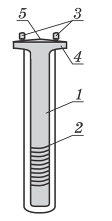
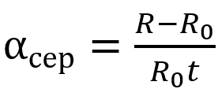
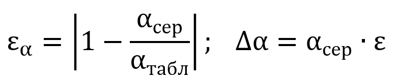

Вимірювання температурного коефіцієнта опору металу.
Мета: експериментально довести,
що залежність електричного опору металевого провідника від температури є лінійною;
визначити температурний коефіцієнт опору міді.
Обладнання: комп'ютер або смартфон, комп'ютерна програма для моделювання
Впишіть ваш клас
Впишіть ваше прізвище та ім'я
Опис установки
У цій роботі пропонується за допомогою пристрою для вивчення залежності
опору металів від температури переконатися на досліді, що залежність опору
металевого провідника від його температури є лінійною. Пристрій для вивчення
залежності опору металів від температури (рисунок) являє собою намотаний
на картонний циліндр 1 мідний дріт 2, кінці якого з’єднані з клемами 3,
розташованими на пластмасовій панелі 4 пристрою. Панель має отвір 5,
призначений для термометра.
Картонний циліндр із дротом вміщений у скляну пробірку.

Для виконання роботи збирають установку (кольоровий рисунок),
яка складається з лабораторного пристрою для вивчення залежності
опору металів від температури, мультиметра, електроплитки,
посудини з водою, термометра та лабораторного штатива з муфтою і
лапкою. Потім, нагріваючи воду в посудині і тим самим збільшуючи
температуру досліджуваного мідного дроту,
вимірюють мультиметром його опір за різних температур.
Переглядаючи відео, заповнюйте таблицю 1. За необхідності ставте відео на паузу, уважно
визначайте випірювані величини.
Таблиця 1
Температура t, ℃
t0 =
30
40
50
60
70
80
Опір R, Ом
R =
Опрацювання результатів експерименту
1. За даними таблиці побудуйте графік залежності опору дроту від його температури – R(t). (Внаслідок похибки вимірювань експериментальні точки можуть не лежати на одній очікуваній лінії. У цьому випадку графік проводять так, щоб з обох боків від нього була приблизно однакова кількість точок. Якщо розташування якої-небудь точки значно відхиляється від області розташування інших точок, то її слід вважати промахом і не враховувати під час побудови графіка.)
2. Продовживши графік залежності R(t) до перетину з віссю ординат,
знайдіть опір R0 мідного дроту за температури 0 °С.
R0 =
3. Виберіть на графіку довільну точку та визначте для неї відповідні значення опору R
і температури t мідного дроту.
R =
t =
Скориставшись формулою

визначте середнє значення температурного коефіцієнта опору міді.
αсер =
4. Оцініть відносну й абсолютну похибки експерименту, порівнявши отриманий результат із табличним значенням температурного коефіцієнта опору міді:

εα =
∆α =
5. Округліть результати вимірювання температурного коефіцієнта опору міді,
скориставшись правилами округлення (абсолютну похибку завжди округлюють до однієї
значущої цифри із завищенням, а результат вимірювання – до величини розряду,
що залишився в абсолютній похибці після округлення),
і подайте результати у вигляді: α = αсер ± ∆α
Аналіз експерименту та його результатів
Проаналізуйте експеримент і його результати. За результатами експерименту сформулюйте і запишіть висновок, у якому зазначте: